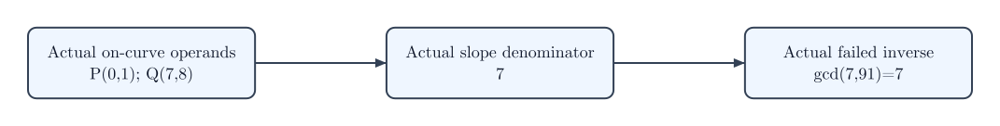
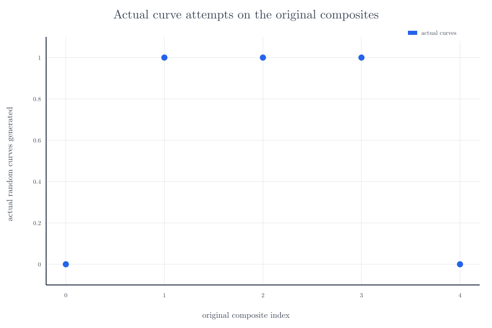
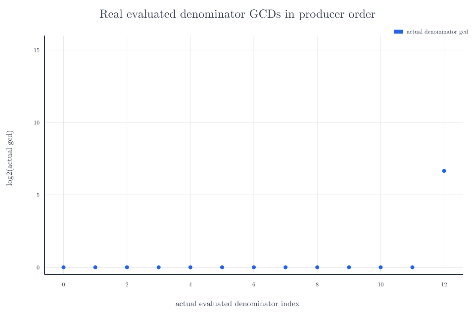
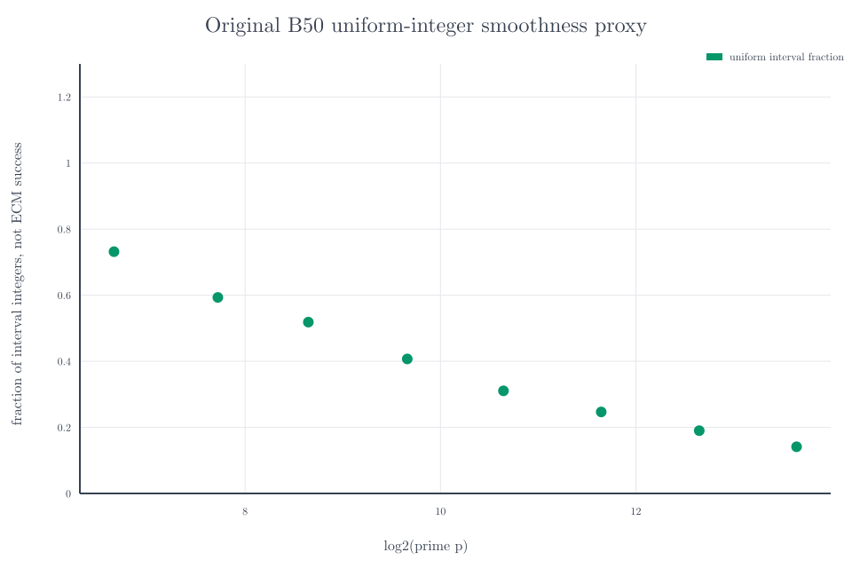

Lenstra elliptic-curve factorization
Abstract
Elliptic-curve factorization finds a divisor when modular point arithmetic needs an inverse whose denominator shares a proper factor with the composite modulus. We begin with an actual checkable failed inverse, retain the original composite inputs, inspect real seeded curve/denominator evidence and distinguish a uniform smoothness proxy from measured per-curve success. This unsigned64 implementation is bounded affine stage1 ECM, not arbitrary-precision production ECM or a primality certificate.
A useful failure of division
On y2=x3+a*x+b modulo n, adding distinct finite points uses slope lambda=(y_Q−y_P)/(x_Q−x_P). An inverse exists only when gcd(x_Q−x_P,n)=1. A proper GCD1<g<n directly factors n. Doubling uses numerator3*x_P^2+a and denominator2*y_P. Infinity and additive-inverse cases use their own shortcuts.
For n91, a12, b1, both P=(0,1) and Q=(7,8) lie on the curve: Q’s right-hand side is428, congruent64. The actual denominator7 has gcd(7,91)=7, so point addition exposes the factor before inversion. This is a library arithmetic call with validated on-curve inputs, not a narrated fictional curve search.
#include <dm/dm.hpp>
int main() {
std::filesystem::create_directories("build");
auto e = dm::algorithms::ecm_add(91, 12, 1, {0, 1, false}, {7, 8, false});
std::print("| actual modulus | actual numerator | actual denominator | actual denominator gcd | actual " "inverted | actual factor | exact divisor check |\n| ---: | ---: | ---: | ---: | --- | ---: " "| --- |\n| 91 | {} | {} | {} | {} | {} | {} |\n",
e.numerator, e.denominator, e.gcd, e.inverted, e.factor,
91 % e.factor == 0);
dm::graphics::Diagram d;
d.node("points", {0, 0}, "Actual on-curve operands\nP(0,1); Q(7,8)").node(
"den", {6, 0},
std::format("Actual slope denominator\n{}", e.denominator)).node(
"gcd", {12, 0},
std::format("Actual failed inverse\ngcd({},91)={}", e.denominator, e.gcd)).edge("points", "den").edge("den", "gcd").save_svg("build/ecm_inverse.svg");
}| actual modulus | actual numerator | actual denominator | actual denominator gcd | actual inverted | actual factor | exact divisor check |
|---|---|---|---|---|---|---|
| 91 | 7 | 7 | 7 | false | 7 | true |

Stage1 and the original composite inputs
Each seeded attempt chooses x,y,a and computes b=y2−x3−a*x modulo n. A discriminant GCD can already reveal a factor; GCD n discards the curve. Otherwise stage1 successively multiplies the current point by the largest power of each prime not exceeding bound B. The default preserves B300, at most3000 attempts and the historical xorshift64 seed/order, preceded by small trial primes through47. The method stops at the first proper factor. No stage2 is implemented.
Retain the original1517,10403,1000003*101,104729*1009 and999983*3 inputs. Some are handled by trial division, so their results are explicitly not counted as evidence of an elliptic-curve inverse failure. The figure counts actual attempted curves rather than elapsed time or a theoretical runtime estimate.
#include <dm/dm.hpp>
int main() {
std::filesystem::create_directories("build");
std::vector<double> x, y;
std::print("| original n | actual returned factor | actual proper factor | quotient | exact divisor | " "actual small-prime checks | actual curves | actual denominator gcds |\n| ---: | ---: | --- " "| ---: | --- | ---: | ---: | ---: |\n");
std::size_t i = 0;
for (std::uint64_t n : {1517ULL, 10403ULL, 1000003ULL * 101,
104729ULL * 1009, 999983ULL * 3}) {
auto a = dm::algorithms::lenstra_ecm_analyze(n);
std::print("| {} | {} | {} | {} | {} | {} | {} | {} |\n", n, a.factor,
a.proper, n / a.factor, n % a.factor == 0,
a.work.trial_divisions, a.work.curves,
a.work.denominator_gcds);
x.push_back(i++);
y.push_back(a.work.curves);
}
auto p = dm::graphics::RPlot::create();
p.points(x, y, "actual curves", {37, 99, 235}, 6).title(
"Actual curve attempts on the original composites").x_label(
"original composite index").y_label("actual random curves generated").save_svg("build/ecm_original.svg");
}| original n | actual returned factor | actual proper factor | quotient | exact divisor | actual small-prime checks | actual curves | actual denominator gcds |
|---|---|---|---|---|---|---|---|
| 1517 | 37 | true | 41 | true | 12 | 0 | 0 |
| 10403 | 101 | true | 103 | true | 15 | 1 | 74 |
| 101000303 | 101 | true | 1000003 | true | 15 | 1 | 74 |
| 105671561 | 104729 | true | 1009 | true | 15 | 1 | 381 |
| 2999949 | 3 | true | 999983 | true | 2 | 0 | 0 |

Real seeded denominator evidence
For10403=101*103, seed1 and bound20, allow at most20 random curves and retain every actual evaluated denominator. Identity and additive-inverse shortcuts are counted as point additions but are not invented denominator records. Each captured curve stores its original point/coefficient/discriminant GCD and actual exit point/factor. All records come from the shared producing execution; the plot reads actual denominator GCDs in chronological order. A complete trace is returned or a quota exception is thrown, never a silently incomplete prefix.
#include <dm/dm.hpp>
int main() {
std::filesystem::create_directories("build");
auto t = dm::algorithms::lenstra_ecm_trace(10403, 1, {20, 20});
std::print("| actual curve | actual initial x | actual initial y | actual a | actual b | actual " "discriminant gcd | actual factor on curve |\n| ---: | ---: | ---: | ---: | ---: | ---: | " "---: |\n");
for (auto &c : t.curves)
std::print("| {} | {} | {} | {} | {} | {} | {} |\n", c.index,
c.initial.x, c.initial.y, c.a, c.b, c.discriminant_gcd,
c.factor);
std::print("\n| actual denominator index | actual curve | actual denominator | actual gcd | actual " "inversion | actual proper factor |\n| ---: | ---: | ---: | ---: | --- | ---: |\n");
std::vector<double> x, y;
for (std::size_t i = 0; i < t.denominators.size(); ++i) {
auto &e = t.denominators[i];
x.push_back(i);
y.push_back(std::log2(double(e.gcd)));
if (i < 5 || e.factor)
std::print("| {} | {} | {} | {} | {} | {} |\n", i, e.curve,
e.denominator, e.gcd, e.inverted, e.factor);
}
std::print("\nActual result {}; proper factor {}; actual additions {}; actual denominator gcds {}; " "actual inversions {}; actual captured entries {}.\n",
t.analysis.factor, t.analysis.proper, t.analysis.work.additions,
t.analysis.work.denominator_gcds, t.analysis.work.inversions,
t.captured_entries);
auto p = dm::graphics::RPlot::create();
p.points(x, y, "actual denominator gcd", {37, 99, 235}, 4).y_limits(-.5, 16).title("Real evaluated denominator GCDs in producer order").x_label("actual evaluated denominator index").y_label("log2(actual gcd)").save_svg("build/ecm_denominators.svg");
}| actual curve | actual initial x | actual initial y | actual a | actual b | actual discriminant gcd | actual factor on curve |
|---|---|---|---|---|---|---|
| 0 | 4059 | 8572 | 9476 | 1631 | 1 | 101 |
| actual denominator index | actual curve | actual denominator | actual gcd | actual inversion | actual proper factor |
|---|---|---|---|---|---|
| 0 | 0 | 6741 | 1 | true | 0 |
| 1 | 0 | 3410 | 1 | true | 0 |
| 2 | 0 | 4910 | 1 | true | 0 |
| 3 | 0 | 1994 | 1 | true | 0 |
| 4 | 0 | 5600 | 1 | true | 0 |
| 12 | 0 | 3333 | 101 | false | 101 |
Actual result 101; proper factor true; actual additions 16; actual denominator gcds 13; actual inversions 12; actual captured entries 22.

Smoothness is explanatory, not an empirical success probability
Modulo an unknown prime factor p, the elliptic-curve group order lies in the Hasse interval
Stage1 uses M=lcm(1,...,B), represented by the product of the prime powers. Having point order dividing M can make a point vanish modulo one prime factor before another. A B-smooth group order is suggestive, but smoothness alone does not guarantee divisibility by M: an individual prime power can exceed B. Curve orders are not uniformly distributed across the interval, point orders can be smaller, and affine exceptional cases matter. Therefore the following original B50 interval experiment is only a uniform integer smoothness proxy. It does not measure ECM success rates or prove a monotone success curve.
The native helper completely validates these small primes and trial-factors every interval integer; no report-side smoothness algorithm remains. The original eight target primes are retained.
#include <dm/dm.hpp>
int main() {
std::filesystem::create_directories("build");
std::vector<double> x, y;
std::print("| original prime | actual inclusive lower | actual inclusive upper | exact50-smooth integer " "count | exact interval count | uniform integer fraction, not success rate |\n| ---: | ---: " "| ---: | ---: | ---: | ---: |\n");
for (std::uint32_t p : {101, 211, 401, 809, 1601, 3203, 6421, 12809}) {
auto h = dm::algorithms::ecm_hasse_smoothness(p, 50);
double f = double(h.smooth) / h.total;
std::print("| {} | {} | {} | {} | {} | {:.12f} |\n", p, h.lower,
h.upper, h.smooth, h.total, f);
x.push_back(std::log2(p));
y.push_back(f);
}
auto plot = dm::graphics::RPlot::create();
plot.points(x, y, "uniform interval fraction", {5, 150, 105}, 6).y_limits(
0, 1.3).title("Original B50 uniform-integer smoothness proxy").x_label(
"log2(prime p)").y_label("fraction of interval integers, not ECM success").save_svg("build/ecm_smoothness.svg");
}| original prime | actual inclusive lower | actual inclusive upper | exact50-smooth integer count | exact interval count | uniform integer fraction, not success rate |
|---|---|---|---|---|---|
| 101 | 82 | 122 | 30 | 41 | 0.731707317073 |
| 211 | 183 | 241 | 35 | 59 | 0.593220338983 |
| 401 | 362 | 442 | 42 | 81 | 0.518518518519 |
| 809 | 754 | 866 | 46 | 113 | 0.407079646018 |
| 1601 | 1522 | 1682 | 50 | 161 | 0.310559006211 |
| 3203 | 3091 | 3317 | 56 | 227 | 0.246696035242 |
| 6421 | 6262 | 6582 | 61 | 321 | 0.190031152648 |
| 12809 | 12584 | 13036 | 64 | 453 | 0.141280353201 |

Limits and verification
All modulus products use exact unsigned128 intermediates, correcting the former signed128 overflow on large unsigned64 residues. This is a fixed-width native implementation requiring compiler128-bit integers, not an arbitrary-precision cryptographic tool. Zero and one return themselves; small primes can also return themselves; exhausted composites return n too. The proper flag distinguishes an actual divisor from failure, but failure is never a primality proof and a found factor can be composite. Zero curve budget is an explicit trial-division-only control.
Explicit bound is in[2,1000000], curve attempts at most1000000. Count-only analysis performs no optional history capture. Trace cap defaults to one million actual prime-power/curve/denominator records, checked before each append;0 disables only that optional cap. Unknown future work is not fabricated as a preallocated history. Fields, point components, capacities, output/runtime copies and bytes are excluded. Quota failure returns no partial result. No external dataset is relevant to exact factorization controls.
Independent arbitrary-precision modular arithmetic verified100 bounded seeded
studies,144 actual curves,3862 evaluated denominator records and100 full
unsigned64 doubling controls, including on-curve operands, PRNG words, GCDs,
inverse slopes and produced points. Complete smoothness counts on all eight
original Hasse intervals were independently trial-factored. Another100 default
searches matched frozen defined-range factors exactly. Native tests cover
original factors, the tiny failed inverse, explicit exhaustion/noncertificate
cases, actual work/quotas and full-range guards. The complete ten-report batch
passed77 native CTest cases,39 directly instrumented ASan/UBSan cases,106
compiled/executed public examples,479/479 scoped definitions and ten
representative clangd hovers. All4 complete report programs executed and all4
native figures were visually reviewed. HTML/Markdown computed result and
identical source/build/export figure bytes passed verification. Repeatable
receipts are retained under build/mepml-conversion/batch-194-203/.
References
H. W. Lenstra Jr.(1987), Factoring Integers with Elliptic Curves, Annals of Mathematics126(3),649–673. This report demonstrates a bounded affine stage1 implementation and carefully distinguishes its evidence from the paper’s broader complexity analysis and production ECM variants.